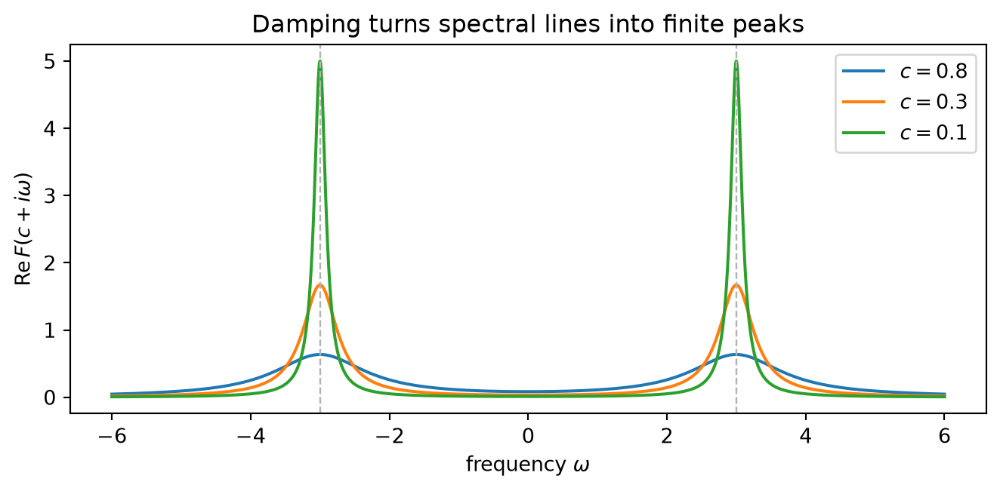

Inverse Laplace Transform and the Fourier Boundary
pure
applied
analysis
differential-equations
fourier-analysis
How Fourier inversion on a vertical line produces the Bromwich integral, why the line must stay inside the region of convergence, and what poles, branch cuts, and boundary values put back into time.
Published
July 29, 2026
“Invert, always invert.”
— attributed to Carl Gustav Jacob Jacobi
In the previous Laplace-transform post, partial fractions made inversion look almost embarrassingly easy. A pole at \(s=a\) became \(e^{at}\). A double pole became \(t e^{at}\). Break a rational function into enough pieces, read the table backwards, and the original motion returns.
That method is useful, but it leaves the real question untouched. Why is there an inverse at all? A general transform need not be rational. It may have infinitely many poles, a branch point, or no decomposition that belongs on an exam formula sheet. If the transform has compressed an entire function of time into the complex \(s\)-plane, where is the instruction for putting every instant back?
The answer is hidden in one substitution:
\[
s=c+i\omega.
\]
Fix the real part \(c\), move vertically by changing \(\omega\), and the Laplace transform becomes an ordinary Fourier transform of an exponentially damped signal. Fourier inversion then rebuilds that damped signal. Multiplying by \(e^{ct}\) removes the damping. The resulting contour integral is the inverse Laplace transform.
That is the whole mechanism. The contour is not an exotic ornament added by complex analysis. It is a Fourier inversion line standing upright.
This identity changes the picture of the \(s\)-plane. A vertical line is not merely a set of complex inputs. It is a complete frequency scan of one particular signal. Move the line to the right and you apply stronger damping before taking the scan. Move it to the left and you remove damping, until eventually the integral may stop converging.
So the two coordinates of \(s\) have separate jobs. The real coordinate \(c\) decides how aggressively the future is suppressed. The imaginary coordinate \(\omega\) asks which oscillations remain after that suppression.
Why the damping is there
Suppose \(f\) is piecewise continuous and of exponential order\(\alpha\): there is a constant \(M\) such that
\[
|f(t)|\leq M e^{\alpha t}
\qquad (t\geq 0).
\tag{4}\]
If \(c>\alpha\), then
\[
|g_c(t)|
\leq M e^{-(c-\alpha)t},
\]
and the right-hand side is integrable on \([0,\infty)\). The damping has bought us an \(L^1\) function, precisely the setting in which the Fourier transform in Equation 3 is an honest integral. It also shows why the Laplace transform is analytic in the half-plane \(\operatorname{Re}s>\alpha\)[1].
The number \(\alpha\) need not be the sharp boundary. The smallest real number beyond which the transform converges is called the abscissa of convergence. What matters for inversion is that we choose a vertical line inside the region of convergence. For the elementary functions used in differential equations, this usually means placing the line to the right of every pole. The more general statement is better: place it where the defining transform actually exists.
This is the first boundary that must not be blurred. A formula for \(F(s)\) may possess an analytic continuation far beyond the half-plane where Equation 1 converges. That continuation is valuable, especially for locating poles, but it is not automatically a valid Fourier slice. The vertical line used for the basic inversion argument must begin in the region of convergence.
Fourier inversion turns the line into time
Fourier inversion says, under standard regularity hypotheses, that a function can be reconstructed from its frequency data:
For example, this pointwise formula holds when \(g_c\) is sufficiently smooth and integrable; at a jump it returns the midpoint of the two one-sided limits. There are broader \(L^2\) and distributional versions, but the mechanism is the same [2].
Now put \(s=c+i\omega\), so \(ds=i\,d\omega\) and \(e^{ct}e^{i\omega t}=e^{st}\). The horizontal frequency integral becomes a vertical contour integral:
This is the Bromwich inversion formula. Under one convenient classical set of conditions, \(f\) is continuous, \(f'\) is piecewise continuous, \(f\) satisfies Equation 4, and \(c>\alpha\)[1].
The symbols can make Equation 7 look like a new machine. It is the machine we already had:
multiply \(f(t)\) by \(e^{-ct}\) so the future becomes integrable;
take its Fourier transform along the line \(c+i\omega\);
perform Fourier synthesis;
multiply by \(e^{ct}\) to undo the damping.
Laplace inversion is Fourier inversion with a movable exponential safety margin.
Why the choice of line does not change the answer
If both \(c_1\) and \(c_2\) lie in the region of convergence, Equation 6 reconstructs \(f\) from either line. The Fourier argument already proves that the answer is independent of \(c\).
Complex analysis gives the geometric version. Consider the two vertical lines as opposite sides of a large rectangle. If \(F\) is analytic in the strip between them and the integrals over the horizontal sides vanish as the rectangle grows, Cauchy’s theorem lets us slide one line into the other without changing the integral. The contour is flexible inside an analytic region.
It is not allowed to slide through a singularity. Crossing a pole changes the contour integral by its residue. Crossing a branch cut changes it by an integral of the jump across the cut. The singularities are therefore not defects in inversion. They are exactly the places where contour motion picks up pieces of the time-domain answer.
For \(t>0\), the factor \(e^{st}\) decays as the contour is pushed far into the left half-plane. Closing the Bromwich line to the left traps the pole at \(s=a\). The residue theorem gives
This is the general reason repeated poles create powers of \(t\). The \(t\sin(\omega t)\) term in undamped resonance was not an isolated transform-table curiosity. It was the time-domain signature of a double pole.
For a rational \(F\), closing the contour often reduces Equation 7 to a finite sum of residues. Partial fractions are the algebraic shadow of that residue calculation.
A branch cut becomes a continuum
Poles are not the whole story. Consider
\[
F(s)=\frac{1}{\sqrt{s}},
\]
with the principal square root and a branch cut along the negative real axis. There is no finite list of poles to read. Still, the inverse is immediate from the Gamma integral:
If the Bromwich contour is pushed left, it cannot pass cleanly through the branch cut. It must wrap around the two sides of the negative real axis. The values of \(\sqrt{s}\) differ by a sign there, so their jump contributes an integral rather than a residue. In fact,
Read Equation 10 as a spectrum. A pole contributes one exponential mode. A branch cut contributes a continuous family of modes \(e^{-rt}\), weighted here by \(r^{-1/2}/\pi\). Discrete singularities produce discrete exponentials; a cut can produce a continuum.
This answers the question that partial fractions could not. Inversion does not require the answer to be a finite sum of exponentials. The contour knows how to collect both isolated modes and continuous ones.
The Fourier boundary
Now move the vertical line towards the imaginary axis. If the causal extension \(Hf\) is integrable, dominated convergence gives
In this case the Fourier transform is literally the boundary value of the Laplace transform from the right half-plane. The Laplace transform is not a separate species. It is a family of Fourier transforms indexed by the damping \(c\), with the undamped Fourier transform sitting at the boundary when that boundary exists.
The final clause matters. A bounded oscillation such as \(\cos(\Omega t)\) does not belong to \(L^1(0,\infty)\). Its Laplace transform
\[
F(s)=\frac{s}{s^2+\Omega^2}
\]
exists for \(\operatorname{Re}s>0\), but the improper integral does not converge pointwise on the imaginary axis. For \(c>0\),
import numpy as npimport matplotlib.pyplot as pltOmega =3.0omega = np.linspace(-6.0, 6.0, 2400)fig, ax = plt.subplots(figsize=(7.0, 3.5))for c in (0.8, 0.3, 0.1): F = (c +1j* omega) / ((c +1j* omega) **2+ Omega**2) lorentzian =0.5* c * (1/ (c**2+ (omega - Omega)**2)+1/ (c**2+ (omega + Omega)**2) )assert np.allclose(F.real, lorentzian, atol=1e-12) ax.plot(omega, F.real, label=fr"$c={c}$")ax.axvline(-Omega, color="0.7", ls="--", lw=0.9)ax.axvline(Omega, color="0.7", ls="--", lw=0.9)ax.set_xlabel(r"frequency $\omega$")ax.set_ylabel(r"$\operatorname{Re}F(c+i\omega)$")ax.set_title("Damping turns spectral lines into finite peaks")ax.legend()plt.tight_layout()

Figure 1: The real part of the Laplace transform of a causal cosine on three vertical lines. As the damping c decreases, the two Lorentzian peaks narrow around the frequencies ±Ω. Their limiting meaning is distributional, not pointwise.
As \(c\downarrow0\), those peaks become Dirac delta distributions. More precisely,
in the sense of distributions. Therefore the boundary value of Equation 12 contains delta masses at \(\omega=\pm\Omega\) together with principal-value terms. The latter appear because the one-sided transform sees the cosine being switched on at \(t=0\). A two-sided cosine has only the two delta frequencies; a causal cosine also remembers the switching boundary.
So “Laplace becomes Fourier on the imaginary axis” is true in two different senses:
as an ordinary limit when \(Hf\in L^1(\mathbb R)\);
as a boundary value of distributions for persistent signals such as constants and sinusoids.
Saying which sense is intended is part of the mathematics.
The initial condition was a boundary impulse
The previous article derived
\[
\mathcal L\{f'\}(s)=sF(s)-f(0+)
\tag{14}\]
by integration by parts. The Fourier boundary picture gives a deeper explanation of the extra term.
Assume here that \(f\) is differentiable for \(t>0\) and has a right limit at the origin. Extend it causally:
\[
\widetilde f(t)=H(t)f(t).
\]
In the language of distributions, differentiating across the switch at \(t=0\) produces an impulse:
\[
\widetilde f'
=Hf'+f(0+)\delta_0.
\tag{15}\]
For a bilateral transform, differentiation multiplies by \(s\). Thus
The initial value is not an awkward correction attached to an otherwise elegant rule. It is the mass of the jump created when the signal is declared to be zero before time begins. The one-sided Laplace transform carries initial conditions because causality itself creates a boundary term.
What inversion can and cannot recover
There are four qualifications worth carrying with the formula.
First, a transform integral cannot detect a change at one isolated time. Inversion recovers functions up to equality almost everywhere unless extra regularity fixes a preferred representative.
Second, at a jump, symmetric Fourier or Bromwich inversion usually returns the midpoint
\[
\frac{f(t^-)+f(t^+)}{2}.
\]
This is not a failure. The transform cannot decide which value to assign at the jump because either choice changes only one point.
Third, the line \(c=0\) is not automatically available. It is available as an ordinary Fourier line only when the undamped causal signal has enough integrability. Otherwise the boundary may exist only distributionally, or may require a different interpretation.
Fourth, exact inversion and numerical inversion are different problems. Formula Equation 7 is unique and exact under its hypotheses, but reconstructing \(f\) from noisy or incomplete values of \(F\) can be ill-conditioned. Analytic continuation amplifies small errors. A beautiful inverse formula does not promise a numerically forgiving algorithm.
What to remember
The inverse Laplace transform is not a table read backwards. Choose \(c\) inside the region of convergence. Along the line \(s=c+i\omega\), the transform is the Fourier transform of the damped causal signal \(H(t)e^{-ct}f(t)\). Fourier inversion reconstructs that signal, and \(e^{ct}\) removes the damping. Written vertically, this is the Bromwich integral.
Poles then become exponentials, repeated poles acquire powers of \(t\), and branch cuts become continuous mixtures of modes. As the contour approaches the imaginary axis, Laplace data becomes Fourier data when an ordinary boundary exists, and distributional Fourier data when it does not.
The line, the contour, and the boundary are three views of one operation.
How to cite
Terry (2026). Inverse Laplace Transform and the Fourier Boundary. Retrieved from https://terryfxh.github.io/math-notes/posts/inverse-laplace-transform-and-the-fourier-boundary/.
References
[1]
NIST Digital Library of Mathematical Functions, “Section 1.14(iii): Laplace transform.” National Institute of Standards and Technology. Accessed: Jul. 29, 2026. [Online]. Available: https://dlmf.nist.gov/1.14.iii
[2]
E. M. Stein and R. Shakarchi, Fourier analysis: An introduction, vol. 1. in Princeton lectures in analysis, vol. 1. Princeton University Press, 2003.
Source Code
---title: "Inverse Laplace Transform and the Fourier Boundary"description: "How Fourier inversion on a vertical line produces the Bromwich integral, why the line must stay inside the region of convergence, and what poles, branch cuts, and boundary values put back into time."date: 2026-07-29categories: [pure, applied, analysis, differential-equations, fourier-analysis]bibliography: ../../references.bibdraft: false---::: {.epigraph}*"Invert, always invert."*[— attributed to Carl Gustav Jacob Jacobi]{.attribution}:::In [the previous Laplace-transform post](../why-laplace-transforms-are-so-useful/), partial fractions made inversion look almost embarrassingly easy. A pole at $s=a$ became $e^{at}$. A double pole became $t e^{at}$. Break a rational function into enough pieces, read the table backwards, and the original motion returns.That method is useful, but it leaves the real question untouched. Why is there an inverse at all? A general transform need not be rational. It may have infinitely many poles, a branch point, or no decomposition that belongs on an exam formula sheet. If the transform has compressed an entire function of time into the complex $s$-plane, where is the instruction for putting every instant back?The answer is hidden in one substitution:$$s=c+i\omega.$$Fix the real part $c$, move vertically by changing $\omega$, and the Laplace transform becomes an ordinary Fourier transform of an exponentially damped signal. Fourier inversion then rebuilds that damped signal. Multiplying by $e^{ct}$ removes the damping. The resulting contour integral is the inverse Laplace transform.That is the whole mechanism. The contour is not an exotic ornament added by complex analysis. It is a Fourier inversion line standing upright.## One vertical line, read sidewaysWe use the one-sided Laplace transform$$F(s)=\mathcal L\{f\}(s) =\int_0^\infty e^{-st}f(t)\,dt.$$ {#eq-laplace}Write $s=c+i\omega$. Then$$\begin{aligned}F(c+i\omega)&=\int_0^\infty e^{-(c+i\omega)t}f(t)\,dt\\&=\int_{-\infty}^{\infty} \underbrace{H(t)e^{-ct}f(t)}_{g_c(t)} e^{-i\omega t}\,dt,\end{aligned}$$ {#eq-fourier-slice}where $H(t)$ is the Heaviside function: zero for $t<0$ and one for $t>0$. With the convention$$\widehat g(\omega)=\int_{-\infty}^{\infty}g(t)e^{-i\omega t}\,dt,$$@eq-fourier-slice says simply$$\boxed{F(c+i\omega)=\widehat{g_c}(\omega)},\qquadg_c(t)=H(t)e^{-ct}f(t).$$ {#eq-key}This identity changes the picture of the $s$-plane. A vertical line is not merely a set of complex inputs. It is a complete frequency scan of one particular signal. Move the line to the right and you apply stronger damping before taking the scan. Move it to the left and you remove damping, until eventually the integral may stop converging.So the two coordinates of $s$ have separate jobs. The real coordinate $c$ decides how aggressively the future is suppressed. The imaginary coordinate $\omega$ asks which oscillations remain after that suppression.## Why the damping is thereSuppose $f$ is piecewise continuous and of **exponential order** $\alpha$: there is a constant $M$ such that$$|f(t)|\leq M e^{\alpha t}\qquad (t\geq 0).$$ {#eq-exp-order}If $c>\alpha$, then$$|g_c(t)|\leq M e^{-(c-\alpha)t},$$and the right-hand side is integrable on $[0,\infty)$. The damping has bought us an $L^1$ function, precisely the setting in which the Fourier transform in @eq-key is an honest integral. It also shows why the Laplace transform is analytic in the half-plane $\operatorname{Re}s>\alpha$ [@dlmf114laplace].The number $\alpha$ need not be the sharp boundary. The smallest real number beyond which the transform converges is called the **abscissa of convergence**. What matters for inversion is that we choose a vertical line inside the region of convergence. For the elementary functions used in differential equations, this usually means placing the line to the right of every pole. The more general statement is better: place it where the defining transform actually exists.This is the first boundary that must not be blurred. A formula for $F(s)$ may possess an analytic continuation far beyond the half-plane where @eq-laplace converges. That continuation is valuable, especially for locating poles, but it is not automatically a valid Fourier slice. The vertical line used for the basic inversion argument must begin in the region of convergence.## Fourier inversion turns the line into timeFourier inversion says, under standard regularity hypotheses, that a function can be reconstructed from its frequency data:$$g_c(t)=\lim_{T\to\infty}\frac{1}{2\pi} \int_{-T}^{T}\widehat{g_c}(\omega)e^{i\omega t}\,d\omega.$$ {#eq-fourier-inversion}For example, this pointwise formula holds when $g_c$ is sufficiently smooth and integrable; at a jump it returns the midpoint of the two one-sided limits. There are broader $L^2$ and distributional versions, but the mechanism is the same [@steinshakarchi2003fourier].Substitute @eq-key into @eq-fourier-inversion. For $t>0$, $g_c(t)=e^{-ct}f(t)$, so$$f(t)=\lim_{T\to\infty}\frac{e^{ct}}{2\pi} \int_{-T}^{T}F(c+i\omega)e^{i\omega t}\,d\omega.$$ {#eq-vertical-fourier}Now put $s=c+i\omega$, so $ds=i\,d\omega$ and$e^{ct}e^{i\omega t}=e^{st}$. The horizontal frequency integral becomes a vertical contour integral:$$\boxed{f(t)=\frac{1}{2\pi i} \lim_{T\to\infty} \int_{c-iT}^{c+iT}e^{st}F(s)\,ds}.$$ {#eq-bromwich}This is the **Bromwich inversion formula**. Under one convenient classical set of conditions, $f$ is continuous, $f'$ is piecewise continuous, $f$ satisfies @eq-exp-order, and $c>\alpha$ [@dlmf114laplace].The symbols can make @eq-bromwich look like a new machine. It is the machine we already had:1. multiply $f(t)$ by $e^{-ct}$ so the future becomes integrable;2. take its Fourier transform along the line $c+i\omega$;3. perform Fourier synthesis;4. multiply by $e^{ct}$ to undo the damping.Laplace inversion is Fourier inversion with a movable exponential safety margin.## Why the choice of line does not change the answerIf both $c_1$ and $c_2$ lie in the region of convergence, @eq-vertical-fourier reconstructs $f$ from either line. The Fourier argument already proves that the answer is independent of $c$.Complex analysis gives the geometric version. Consider the two vertical lines as opposite sides of a large rectangle. If $F$ is analytic in the strip between them and the integrals over the horizontal sides vanish as the rectangle grows, Cauchy's theorem lets us slide one line into the other without changing the integral. The contour is flexible inside an analytic region.It is not allowed to slide through a singularity. Crossing a pole changes the contour integral by its residue. Crossing a branch cut changes it by an integral of the jump across the cut. The singularities are therefore not defects in inversion. They are exactly the places where contour motion picks up pieces of the time-domain answer.## A pole becomes an exponentialTake the smallest possible example,$$F(s)=\frac{1}{s-a},\qquad c>\operatorname{Re}a.$$For $t>0$, the factor $e^{st}$ decays as the contour is pushed far into the left half-plane. Closing the Bromwich line to the left traps the pole at $s=a$. The residue theorem gives$$\begin{aligned}\mathcal L^{-1}\left\{\frac{1}{s-a}\right\}(t)&=\operatorname*{Res}_{s=a}\frac{e^{st}}{s-a}\\&=e^{at}.\end{aligned}$$The familiar table entry has emerged from the contour. No guess was involved.If the pole has order $m$, then$$\operatorname*{Res}_{s=a}\frac{e^{st}}{(s-a)^m}=\frac{1}{(m-1)!} \left.\frac{d^{m-1}}{ds^{m-1}}e^{st}\right|_{s=a}=\frac{t^{m-1}}{(m-1)!}e^{at}.$$Hence$$\boxed{\mathcal L^{-1}\left\{\frac{1}{(s-a)^m}\right\}(t)=\frac{t^{m-1}}{(m-1)!}e^{at}}.$$ {#eq-repeated-pole}This is the general reason repeated poles create powers of $t$. The $t\sin(\omega t)$ term in undamped resonance was not an isolated transform-table curiosity. It was the time-domain signature of a double pole.For a rational $F$, closing the contour often reduces @eq-bromwich to a finite sum of residues. Partial fractions are the algebraic shadow of that residue calculation.## A branch cut becomes a continuumPoles are not the whole story. Consider$$F(s)=\frac{1}{\sqrt{s}},$$with the principal square root and a branch cut along the negative real axis. There is no finite list of poles to read. Still, the inverse is immediate from the Gamma integral:$$\int_0^\infty e^{-st}\frac{1}{\sqrt{\pi t}}\,dt=\frac{1}{\sqrt{s}},\qquad \operatorname{Re}s>0.$$Therefore$$\mathcal L^{-1}\left\{\frac{1}{\sqrt{s}}\right\}(t)=\frac{1}{\sqrt{\pi t}}.$$ {#eq-branch-pair}If the Bromwich contour is pushed left, it cannot pass cleanly through the branch cut. It must wrap around the two sides of the negative real axis. The values of $\sqrt{s}$ differ by a sign there, so their jump contributes an integral rather than a residue. In fact,$$\frac{1}{\sqrt{\pi t}}=\frac{1}{\pi}\int_0^\infty r^{-1/2}e^{-rt}\,dr.$$ {#eq-continuum}Read @eq-continuum as a spectrum. A pole contributes one exponential mode. A branch cut contributes a continuous family of modes $e^{-rt}$, weighted here by $r^{-1/2}/\pi$. Discrete singularities produce discrete exponentials; a cut can produce a continuum.This answers the question that partial fractions could not. Inversion does not require the answer to be a finite sum of exponentials. The contour knows how to collect both isolated modes and continuous ones.## The Fourier boundaryNow move the vertical line towards the imaginary axis. If the causal extension $Hf$ is integrable, dominated convergence gives$$\lim_{c\downarrow 0}F(c+i\omega)=\int_0^\infty f(t)e^{-i\omega t}\,dt=\widehat{Hf}(\omega).$$ {#eq-boundary}In this case the Fourier transform is literally the boundary value of the Laplace transform from the right half-plane. The Laplace transform is not a separate species. It is a family of Fourier transforms indexed by the damping $c$, with the undamped Fourier transform sitting at the boundary when that boundary exists.The final clause matters. A bounded oscillation such as $\cos(\Omega t)$ does not belong to $L^1(0,\infty)$. Its Laplace transform$$F(s)=\frac{s}{s^2+\Omega^2}$$exists for $\operatorname{Re}s>0$, but the improper integral does not converge pointwise on the imaginary axis. For $c>0$,$$F(c+i\omega)=\frac12\left( \frac{1}{c+i(\omega-\Omega)} +\frac{1}{c+i(\omega+\Omega)}\right).$$ {#eq-damped-cosine}The real part consists of two Lorentzian peaks:$$\operatorname{Re}F(c+i\omega)=\frac{c}{2}\left[\frac{1}{c^2+(\omega-\Omega)^2}+\frac{1}{c^2+(\omega+\Omega)^2}\right].$$ {#eq-lorentzians}```{python}#| label: fig-fourier-boundary#| fig-cap: "The real part of the Laplace transform of a causal cosine on three vertical lines. As the damping c decreases, the two Lorentzian peaks narrow around the frequencies ±Ω. Their limiting meaning is distributional, not pointwise."import numpy as npimport matplotlib.pyplot as pltOmega =3.0omega = np.linspace(-6.0, 6.0, 2400)fig, ax = plt.subplots(figsize=(7.0, 3.5))for c in (0.8, 0.3, 0.1): F = (c +1j* omega) / ((c +1j* omega) **2+ Omega**2) lorentzian =0.5* c * (1/ (c**2+ (omega - Omega)**2)+1/ (c**2+ (omega + Omega)**2) )assert np.allclose(F.real, lorentzian, atol=1e-12) ax.plot(omega, F.real, label=fr"$c={c}$")ax.axvline(-Omega, color="0.7", ls="--", lw=0.9)ax.axvline(Omega, color="0.7", ls="--", lw=0.9)ax.set_xlabel(r"frequency $\omega$")ax.set_ylabel(r"$\operatorname{Re}F(c+i\omega)$")ax.set_title("Damping turns spectral lines into finite peaks")ax.legend()plt.tight_layout()```As $c\downarrow0$, those peaks become Dirac delta distributions. More precisely,$$\frac{1}{c+ix}\longrightarrow\pi\delta(x)-i\,\operatorname{pv}\frac{1}{x}$$in the sense of distributions. Therefore the boundary value of @eq-damped-cosine contains delta masses at $\omega=\pm\Omega$ together with principal-value terms. The latter appear because the one-sided transform sees the cosine being switched on at $t=0$. A two-sided cosine has only the two delta frequencies; a causal cosine also remembers the switching boundary.So "Laplace becomes Fourier on the imaginary axis" is true in two different senses:- as an ordinary limit when $Hf\in L^1(\mathbb R)$;- as a boundary value of distributions for persistent signals such as constants and sinusoids.Saying which sense is intended is part of the mathematics.## The initial condition was a boundary impulseThe previous article derived$$\mathcal L\{f'\}(s)=sF(s)-f(0+)$$ {#eq-derivative-rule}by integration by parts. The Fourier boundary picture gives a deeper explanation of the extra term.Assume here that $f$ is differentiable for $t>0$ and has a right limit at the origin. Extend it causally:$$\widetilde f(t)=H(t)f(t).$$In the language of distributions, differentiating across the switch at $t=0$ produces an impulse:$$\widetilde f'=Hf'+f(0+)\delta_0.$$ {#eq-causal-derivative}For a bilateral transform, differentiation multiplies by $s$. Thus$$sF(s)=\mathcal L\{f'\}(s)+f(0+),$$which rearranges to @eq-derivative-rule.The initial value is not an awkward correction attached to an otherwise elegant rule. It is the mass of the jump created when the signal is declared to be zero before time begins. The one-sided Laplace transform carries initial conditions because causality itself creates a boundary term.## What inversion can and cannot recoverThere are four qualifications worth carrying with the formula.First, a transform integral cannot detect a change at one isolated time. Inversion recovers functions up to equality almost everywhere unless extra regularity fixes a preferred representative.Second, at a jump, symmetric Fourier or Bromwich inversion usually returns the midpoint$$\frac{f(t^-)+f(t^+)}{2}.$$This is not a failure. The transform cannot decide which value to assign at the jump because either choice changes only one point.Third, the line $c=0$ is not automatically available. It is available as an ordinary Fourier line only when the undamped causal signal has enough integrability. Otherwise the boundary may exist only distributionally, or may require a different interpretation.Fourth, exact inversion and numerical inversion are different problems. Formula @eq-bromwich is unique and exact under its hypotheses, but reconstructing $f$ from noisy or incomplete values of $F$ can be ill-conditioned. Analytic continuation amplifies small errors. A beautiful inverse formula does not promise a numerically forgiving algorithm.## What to rememberThe inverse Laplace transform is not a table read backwards. Choose $c$ inside the region of convergence. Along the line $s=c+i\omega$, the transform is the Fourier transform of the damped causal signal $H(t)e^{-ct}f(t)$. Fourier inversion reconstructs that signal, and $e^{ct}$ removes the damping. Written vertically, this is the Bromwich integral.Poles then become exponentials, repeated poles acquire powers of $t$, and branch cuts become continuous mixtures of modes. As the contour approaches the imaginary axis, Laplace data becomes Fourier data when an ordinary boundary exists, and distributional Fourier data when it does not.The line, the contour, and the boundary are three views of one operation.## How to cite> Terry (2026). *Inverse Laplace Transform and the Fourier Boundary*. Retrieved from `https://terryfxh.github.io/math-notes/posts/inverse-laplace-transform-and-the-fourier-boundary/`.